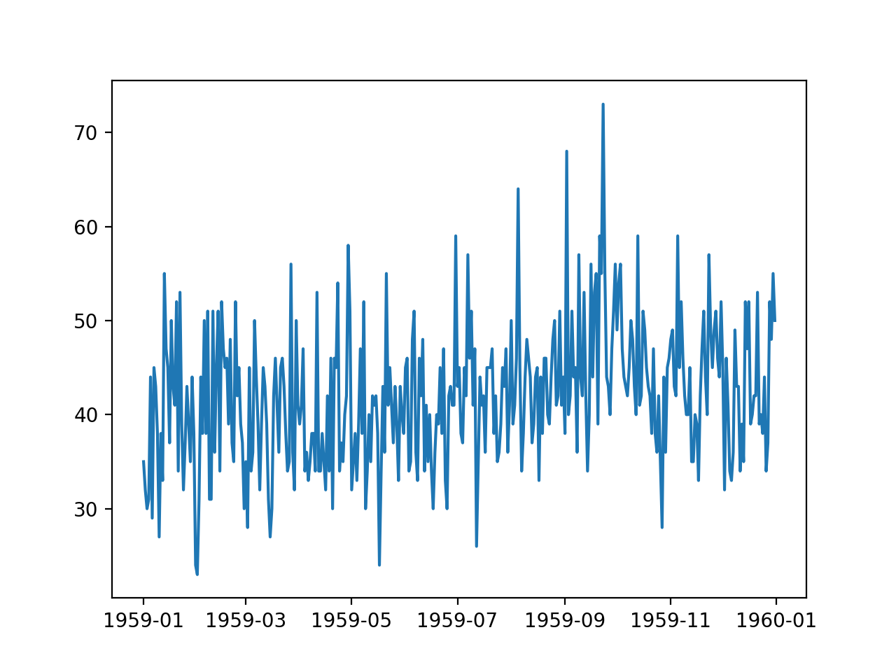

时间序列分析示例1¶
1. Daily Female Births Dataset¶
2. 读取数据¶
import pandas as pd
series = pd.read_csv("daily-total-female-births.csv",
header = 0,
parse_dates = [0],
index_col = 0,
squeeze = True)
print(type(series))
print(series.head())
<class 'pandas.core.series.Series'>
Date
1959-01-01 35
1959-01-02 32
1959-01-03 30
1959-01-04 31
1959-01-05 44
Name: Births, dtype: int64
3. 探索数据¶
print(series.head(10))
Date
1959-01-01 35
1959-01-02 32
1959-01-03 30
1959-01-04 31
1959-01-05 44
1959-01-06 29
1959-01-07 45
1959-01-08 43
1959-01-09 38
1959-01-10 27
Name: Births, dtype: int64
print(series.size)
365
print(series["1959-01"])
Date
1959-01-01 35
1959-01-02 32
1959-01-03 30
1959-01-04 31
1959-01-05 44
1959-01-06 29
1959-01-07 45
1959-01-08 43
1959-01-09 38
1959-01-10 27
1959-01-11 38
1959-01-12 33
1959-01-13 55
1959-01-14 47
1959-01-15 45
1959-01-16 37
1959-01-17 50
1959-01-18 43
1959-01-19 41
1959-01-20 52
1959-01-21 34
1959-01-22 53
1959-01-23 39
1959-01-24 32
1959-01-25 37
1959-01-26 43
1959-01-27 39
1959-01-28 35
1959-01-29 44
1959-01-30 38
1959-01-31 24
Name: Births, dtype: int64
print(series.describe())
count 365.000000
mean 41.980822
std 7.348257
min 23.000000
25% 37.000000
50% 42.000000
75% 46.000000
max 73.000000
Name: Births, dtype: float64
plt.plot(series)
plt.show()
